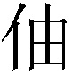
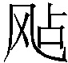
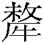

第五回 发矫诏诸镇应曹公 破关兵三英战吕布
却说陈宫临欲下手杀曹操，忽转念曰：”我为国家跟他到此，杀之不义。不若弃而他往。”插剑上马，不等天明，自投东郡去了。操觉，不见陈宫，寻思：”此人见我说了这两句，疑我不仁，弃我而去。吾当急行，不可久留。”遂连夜到陈留，寻见父亲，备说前事，欲散家资招募义兵。父言：”资少恐不成事。此间有孝廉卫弘，疏财仗义，其家巨富，若得相助，事可图矣。”
操置酒张筵，拜请卫弘到家，告曰：”今汉室无主，董卓专权，欺君害民，天下切齿。操欲力扶社稷，恨力不足。公乃忠义之士，敢求相助！”卫弘曰：”吾有是心久矣，恨未遇英雄耳。既孟德有大志，愿将家资相助。”操大喜。于是先发矫诏，驰报各道，然后招集义兵，竖起招兵白旗一面，上书”忠义”二字。不数日间，应募之士，如雨骈集1。
一日，有一个阳平卫国人，姓乐名进，字文谦，来投曹操。又有一个山阳巨鹿人，姓李名典，字曼成，也来投曹操。操皆留为帐前吏。又有沛国谯人夏侯惇，字元让，乃夏侯婴之后，自小习枪棒，年十四从师学武，有人辱骂其师，惇杀之，逃于外方，闻知曹操起兵，与其族弟夏侯渊两个，各引壮士千人来会。此二人本操之弟兄，操父曹嵩原是夏侯氏之子，过房与曹家，因此是同族。不数日，曹氏兄弟曹仁、曹洪各引兵千馀来助。曹仁字子孝，曹洪字子廉，二人弓马熟娴，武艺精通。操大喜，于村中调练军马。卫弘尽出家财，置办衣甲旗幡，四方送粮食者，不计其数。
时袁绍得操矫诏，乃聚麾下文武，引兵三万，离渤海来与曹操会盟。操作檄文以达诸郡。檄文曰：
操等谨以大义布告天下：董卓欺天罔地，灭国弑君；秽乱宫禁，残害生灵。狠戾2不仁，罪恶充积！今奉天子密诏，大集义兵，誓欲扫清华夏，剿戮群凶。望兴义师，共泄公愤；扶持王室，拯救黎民。檄文到日，可速奉行！
操发檄文去后，各镇诸侯皆起兵相应：第一镇，后将军南阳太守袁术。第二镇，冀州刺史韩馥。第三镇，豫州刺史孔

。第四镇，兖州刺史刘岱。第五镇，河内郡太守王匡。第六镇，陈留太守张邈。第七镇，东郡太守乔瑁。第八镇，山阳太守袁遗。第九镇，济北相鲍信。第十镇，北海太守孔融。第十一镇，广陵太守张超。第十二镇，徐州刺史陶谦。第十三镇，西凉太守马腾。第十四镇，北平太守公孙瓒。第十五镇，上党太守张杨。第十六镇，乌程侯长沙太守孙坚。第十七镇，祁乡侯渤海太守袁绍。诸路军马，多少不等，有三万者，有一二万者，各领文官武将，投洛阳来。且说北平太守公孙瓒，统领精兵一万五千，路经德州平原县。正行之间，遥见桑树丛中一面黄旗，数骑来迎，瓒视之乃刘玄德也。瓒问曰：”贤弟何故在此？”玄德曰：”旧日蒙兄保备为平原县令，今闻大军过此，特来奉候，就请兄长入城歇马。”瓒指关、张而问曰：”此何人也？”玄德曰：”此关羽、张飞，备结义兄弟也。”瓒曰：”乃同破黄巾者乎？”玄德曰：”皆此二人之力。”瓒曰：”今居何职？”玄德答曰：”关羽为马弓手，张飞为步弓手。”瓒叹曰：”如此可谓埋没英雄！今董卓作乱，天下诸侯共往诛之。贤弟可弃此卑官，一同讨贼，力扶汉室，若何？”玄德曰：”愿往。”张飞曰：”当时若容我杀了此贼，免有今日之事。”云长曰：”事已至此，即当收拾前去。”
玄德、关、张引数骑跟公孙瓒来，曹操接着。众诸侯亦陆续皆至，各自安营下寨，连接二百馀里。操乃宰牛杀马，大会诸侯，商议进兵之策。太守王匡曰：”今奉大义，必立盟主，众听约束，然后进兵。”操曰：”袁本初四世三公，门多故吏，汉朝名相之裔，可为盟主。”绍再三推辞。众皆曰：”非本初不可。”绍方应允。次日筑台三层，遍列五方旗帜，上建白旄黄钺3，兵符将印，请绍登坛。绍整衣佩剑，慨然而上，焚香再拜。其盟曰：
汉室不幸，皇纲4失统。贼臣董卓，乘衅5纵害，祸加至尊，虐流百姓。绍等惧社稷沦丧，纠合义兵，并赴国难。凡我同盟，齐心戮力，以致臣节，必无二志。有渝6此盟，俾坠其命，无克遗育7。皇天后土，祖宗明灵，实皆鉴之！
读毕，歃血8。众因其辞气慷慨，皆涕泗横流。歃血已罢，下坛。众扶绍升帐而坐，两行依爵位年齿分列坐定。操行酒数巡，言曰：”今日既立盟主，各听调遣，同扶国家，勿以强弱计较。”袁绍曰：”绍虽不才，既承公等推为盟主，有功必赏，有罪必罚。国有常刑，军有纪律，各宜遵守，勿得违犯。”众皆曰：”惟命是听。”绍曰：”吾弟袁术总督粮草，应付诸营，无使有缺。更须一人为先锋，直抵汜水关挑战。馀各据险要，以为接应。”
长沙太守孙坚出曰：”坚愿为前部。”绍曰：”文台勇烈，可当此任。”坚遂引本部人马杀奔汜水关来。守关军士，差流星马往洛阳丞相府告急。董卓自专大权之后，每日饮宴。李儒接得告急文书，径来禀卓。卓大惊，急聚众将商议。温侯吕布挺身出曰：”父亲勿虑。关外诸侯，布视之如草芥9，愿提虎狼之师，尽斩其首，悬于都门。”卓大喜曰：”吾有奉先，高枕无忧矣！”言未绝，吕布背后一人高声出曰：”‘割鸡焉用牛刀？’不劳温侯亲往。吾斩众诸侯首级，如探囊取物耳！”卓视之，其人身长九尺，虎体狼腰，豹头猿臂，关西人也，姓华名雄。卓闻言大喜，加为骁骑校尉，拨马步军五万，同李肃、胡轸、赵岑星夜赴关迎敌。
众诸侯内有济北相鲍信，寻思孙坚既为前部，怕他夺了头功，暗拨其弟鲍忠，先将马步军三千，径抄小路，直到关下搦战。华雄引铁骑五百飞下关来，大喝：”贼将休走！”鲍忠急待退，被华雄手起刀落，斩于马下，生擒将校极多。华雄遣人赍鲍忠首级来相府报捷，卓加雄为都督。
却说孙坚引四将直至关前。那四将？第一个，右北平土垠人，姓程名普，字德谋，使一条铁脊蛇矛；第二个，姓黄名盖，字公覆，零陵人也，使铁鞭；第三个，姓韩名当，字义公，辽西令支人也，使一口大刀；第四个，姓祖名茂，字大荣，吴郡富春人也，使双刀。孙坚披烂银铠，裹赤帻，横古锭刀，骑花鬃马，指关上而骂曰：”助恶匹夫，何不早降！”华雄副将胡轸引兵五千出关迎战。程普飞马挺矛，直取胡轸。斗不数合，程普刺中胡轸咽喉，死于马下。坚挥军直杀至关前，关上矢石如雨。孙坚引兵回至梁东屯住，使人于袁绍处报捷，就于袁术处催粮。
或说术曰：”孙坚乃江东猛虎。若打破洛阳，杀了董卓，正是除狼而得虎也。今不与粮，彼军必散。”术听之，不发粮草。孙坚军缺食，军中自乱，细作10报上关来。李肃为华雄谋曰：”今夜我引一军从小路下关，袭孙坚寨后，将军击其前寨，坚可擒矣。”雄从之，传令军士饱餐，乘夜下关。是夜月白风清，到坚寨时，已是半夜，鼓噪直进。坚慌忙披挂上马，正遇华雄。两马相交，斗不数合，后面李肃军到，竟天价放起火来，坚军乱窜。众将各自混战，止有祖茂跟定孙坚，突围而走。背后华雄追来，坚取箭，连放两箭，皆被华雄躲过。再放第三箭时，因用力太猛，拽折了鹊画弓，只得弃弓纵马而奔。祖茂曰：”主公头上赤帻射目，为贼所认识，可脱帻与某戴之。”坚就脱帻换茂盔，分两路而走。雄军只望赤帻者追赶，坚乃从小路得脱。祖茂被华雄追急，将赤帻挂于人家烧不尽的庭柱上，却入树林潜躲。华雄军于月下遥见赤帻，四面围定，不敢近前。用箭射之，方知是计，遂向前取了赤帻。祖茂于林后杀出，挥双刀欲劈华雄，雄大喝一声，将祖茂一刀砍于马下。杀至天明，雄方引兵上关。
程普、黄盖、韩当都来寻见孙坚，再收拾军马屯住。坚为折了祖茂，伤感不已，星夜遣人报知袁绍。绍大惊曰：”不想孙文台败于华雄之手！”便聚众诸侯商议。众人都到，只有公孙瓒后至，绍请入帐列坐。绍曰：”前日鲍将军之弟不遵调遣，擅自进兵，杀身丧命，折了许多军士，今者孙文台又败于华雄。挫动锐气，为之奈何？”诸侯并皆不语。绍举目遍视，见公孙瓒背后立着三人，容貌异常，都在那里冷笑。绍问曰：”公孙太守背后何人？”瓒呼玄德出曰：”此吾自幼同舍兄弟，平原令刘备是也。”曹操曰：”莫非破黄巾刘玄德乎？”瓒曰：”然。”即令刘玄德拜见。瓒将玄德功劳并其出身，细说一遍。绍曰：”既是汉室宗派，取坐来。”命坐，备逊谢。绍曰：”吾非敬汝名爵，吾敬汝是帝室之胄耳。”玄德乃坐于末位，关、张叉手11侍立于后。
忽探子来报：”华雄引铁骑下关，用长竿挑着孙太守赤帻，来寨前大骂搦战。”绍曰：”谁敢去战？”袁术背后转出骁将俞涉曰：”小将愿往。”绍喜，便着俞涉出马。即时报来：”俞涉与华雄战不三合，被华雄斩了。”众大惊。太守韩馥曰：”吾有上将潘凤，可斩华雄。”绍急令出战。潘凤手提大斧上马。去不多时，飞马来报：”潘凤又被华雄斩了。”众皆失色。绍曰：”可惜吾上将颜良、文丑未至！得一人在此，何惧华雄！”言未毕，阶下一人大呼出曰：”小将愿往斩华雄头，献于帐下！”众视之，见其人身长九尺，髯长二尺，丹凤眼，卧蚕眉，面如重枣，声如巨钟，立于帐前。绍问何人，公孙瓒曰：”此刘玄德之弟关羽也。”绍问现居何职，瓒曰：”跟随刘玄德充马弓手。”帐上袁术大喝曰：”汝欺吾众诸侯无大将耶？量一弓手，安敢乱言！与我打出！”曹操急止之曰：”公路息怒。此人既出大言，必有勇略，试教出马，如其不胜，责之未迟。”袁绍曰：”使一弓手出战，必被华雄所笑。”操曰：”此人仪表不俗，华雄安知他是弓手？”关公曰：”如不胜，请斩某头。”操教酾热酒一杯，与关公饮了上马。关公曰：”酒且斟下，某去便来。”出帐提刀，飞身上马。众诸侯听得关外鼓声大振，喊声大举，如天摧地塌，岳撼山崩，众皆失惊。正欲探听，鸾铃响处，马到中军，云长提华雄之头，掷于地上，其酒尚温。后人有诗赞之曰：
威镇乾坤第一功，辕门画鼓响冬冬。云长停盏施英勇，酒尚温时斩华雄。
曹操大喜。只见玄德背后转出张飞，高声大叫：”俺哥哥斩了华雄，不就这里杀入关去，活拿董卓，更待何时！”袁术大怒，喝曰：”俺大臣尚自谦让，量一县令手下小卒，安敢在此耀武扬威！都与赶出帐去！”曹操曰：”得功者赏，何计贵贱乎？”袁术曰：”既然公等只重一县令，我当告退。”操曰：”岂可因一言而误大事耶？”命公孙瓒且带玄德、关、张回寨，众官皆散。曹操暗使人赍牛酒抚慰三人。
却说华雄手下败军，报上关来。李肃慌忙写告急文书，申闻董卓，卓急聚李儒、吕布等商议。儒曰：”今失了上将华雄，贼势浩大。袁绍为盟主，绍叔袁隗现为太傅，倘或里应外合，深为不便，可先除之。请丞相亲领大军，分拨剿捕。”卓然其说，唤李傕、郭汜领兵五百，围住太傅袁隗家，不分老幼，尽皆诛绝，先将袁隗首级去关前号令。卓遂起兵二十万，分为两路而来：一路先令李傕、郭汜引兵五万，把住汜水关，不要厮杀；卓自将十五万，同李儒、吕布、樊稠、张济等守虎牢关。这关离洛阳五十里。军马到关，卓令吕布领三万军去关前扎住大寨，卓自在关上屯住。
流星马探听得，报入袁绍大寨里来，绍聚众商议。操曰：”董卓屯兵虎牢，截俺诸侯中路，今可勒兵一半迎敌。”绍乃分王匡、乔瑁、鲍信、袁遗、孔融、张杨、陶谦、公孙瓒八路诸侯，往虎牢关迎敌，操引军往来救应。八路诸侯，各自起兵，河内太守王匡引兵先到。吕布带铁骑三千，飞奔来迎。王匡将军马列成阵势，勒马门旗下看时，见吕布出阵：头戴三叉束发紫金冠，体挂西川红锦百花袍，身披兽面吞头连环铠，腰系勒甲玲珑狮蛮带，弓箭随身，手持画戟，坐下嘶风赤兔马，果然是”人中吕布，马中赤兔”！王匡回头问曰：”谁敢出战？”后面一将，纵马挺枪而出。匡视之，乃河内名将方悦。两马相交，无五合，被吕布一戟刺于马下，挺戟直冲过来。匡军大败，四散奔走。布东西冲杀，如入无人之境。幸得乔瑁、袁遗两军皆至，来救王匡，吕布方退。三路诸侯，各折了些人马，退三十里下寨。随后五路军马都至，一处商议，言吕布英雄，无人可敌。
正虑间，小校报来：”吕布搦战。”八路诸侯一齐上马，军分八队，布在高冈。遥望吕布一簇军马，绣旗招

，先来冲阵。上党太守张杨部将穆顺，出马挺枪迎战，被吕布手起一戟，刺于马下，众大惊。北海太守孔融部将武安国，使铁锤飞马而出，吕布挥戟拍马来迎。战到十馀合，一戟砍断安国手腕，弃锤于地而走。八路军兵齐出，救了武安国，吕布退回去了。众诸侯回寨商议。曹操曰：”吕布英勇无敌，可会十八路诸侯，共议良策。若擒了吕布，董卓易诛耳。”正议间，吕布复引兵搦战。八路诸侯齐出，公孙瓒挥槊亲战吕布。战不数合，瓒败走，吕布纵赤兔马赶来。那马日行千里，飞走如风。看看赶上，布举画戟望瓒后心便刺。傍边一将，圆睁环眼，倒竖虎须，挺丈八蛇矛，飞马大叫：”三姓家奴休走！燕人张飞在此！”吕布见了，弃了公孙瓒，便战张飞。飞抖擞精神，酣战吕布。连斗五十馀合，不分胜负。云长见了，把马一拍，舞八十二斤青龙偃月刀，来夹攻吕布。三匹马丁字儿厮杀。战到三十合，战不倒吕布。刘玄德掣双股剑，骤黄鬃马，刺斜里也来助战。这三个围住吕布，转灯儿般厮杀。八路人马，都看得呆了。吕布架隔遮拦不定，看着玄德面上，虚刺一戟，玄德急闪。吕布荡开阵角，倒拖画戟，飞马便回。三个那里肯舍，拍马赶来。八路军兵，喊声大震，一齐掩杀。吕布军马望关上奔走，玄德、关、张随后赶来。古人曾有篇言语，单道着玄德、关、张三战吕布：
汉朝天数当桓灵，炎炎红日将西倾。奸臣董卓废少帝，刘协懦弱魂梦惊。曹操传檄告天下，诸侯奋怒皆兴兵。议立袁绍作盟主，誓扶王室定太平。温侯吕布世无比，雄才四海夸英伟。护躯银铠砌龙鳞，束发金冠簪雉尾。参差宝带兽平吞，错落锦袍飞凤起。龙驹跳踏起天风，画戟荧煌射秋水。出关搦战谁敢当？诸侯胆裂心惶惶。踊出燕人张翼德，手持蛇矛丈八枪。虎须倒竖翻金线，环眼圆睁起电光。酣战未能分胜败，阵前恼起关云长。青龙宝刀灿霜雪，鹦鹉战袍飞蛱蝶。马蹄到处鬼神嚎，目前一怒应流血。枭雄玄德掣双锋，抖擞天威施勇烈。三人围绕战多时，遮拦架隔无休歇。喊声震动天地翻，杀气迷漫牛斗寒。吕布力穷寻走路，遥望家山拍马还。倒拖画杆方天戟，乱散销金五彩幡。顿断绒绦走赤兔，翻身飞上虎牢关。
三人直赶吕布到关下，看见关上西风飘动青罗伞盖。张飞大叫：”此必董卓！追吕布有甚强处？不如先拿董贼，便是斩草除根！”拍马上关，来擒董卓。正是：擒贼定须擒贼首，奇功端的12待奇人。未知胜负如何，且听下文分解。
-
如雨骈（pián）集——像雨落地一样汇集到一处，比喻众多和快速。 ↩
-
狠戾——凶狠残暴。 ↩
-
白旄黄钺（yuè）——白旄，竿头饰有

牛尾或羽毛的旗帜；黄钺，涂金的斧子。 ↩ -
皇纲——指封建皇朝的法纪。 ↩
-
衅（xìn）——机会、借口、空子。 ↩
-
渝——变更。 ↩
-
无克遗育——不能留下子孙后代。 ↩
-
歃（shà）血——古代人盟誓的时候，涂血于口旁（一说口含血），表示遵守盟约的决心。 ↩
-
草芥——指轻贱的、微不足道的东西。芥，小草。 ↩
-
细作——侦探、间谍。 ↩
-
叉手——古代一种礼数，子弟晚辈或随从等人侍立时，两手交拱在胸前，表示恭顺敬谨。 ↩
-
端的——真的、果然的意思。 ↩